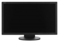

器材库 > 显示器 > EA232WMi

显示屏
面板尺寸
23英寸/58.4厘米
面板类型
IPS
最佳分辨率
1920×1080
点距
0.265mm
亮度（最高）
250cd/m2
对比度
1000:1（动态对比度25000:1）
响应时间
14ms
显示颜色
约1677万
视频特性
色彩校准
△E≤0.3
I/O接口
信号输入
DVI-D,VGA,Display Port
最大功耗
最大功耗
开机最大31W
机械设计
外观颜色
黑色, 白色
俯角调节
-5°~+35°
水平旋转
支持
垂直旋转
支持
高度可调
支持
VESA壁挂
100x100mm
尺寸
机体尺寸含支架
550.1×379.1-489.1×220mm
机体尺寸不含支架
550.1×329.0×71mm
重量
净重
带底座7.4kg，不带底座4.9kg
该产品暂无存档的网友点评
产品图 / 样片
日电 EA232WMi